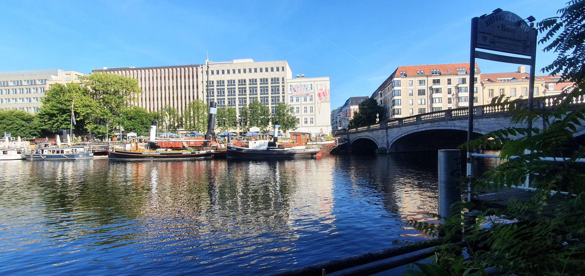
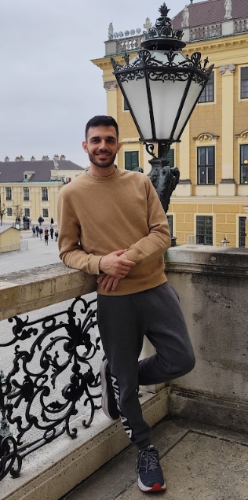
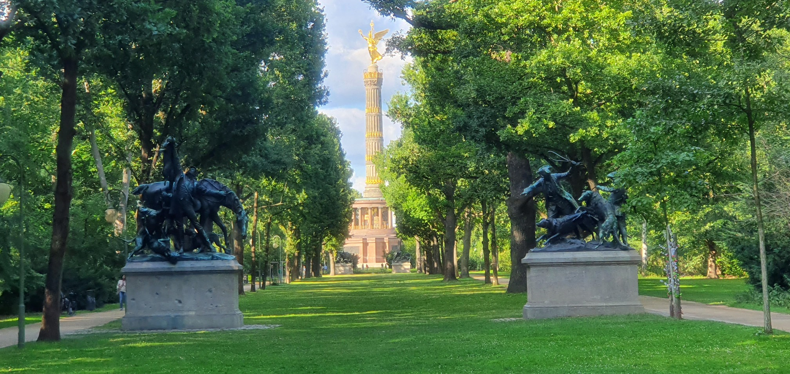
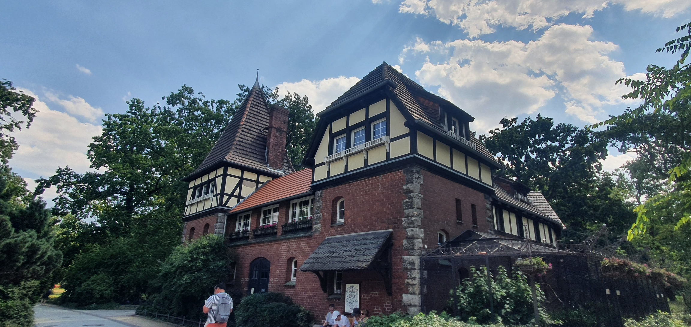
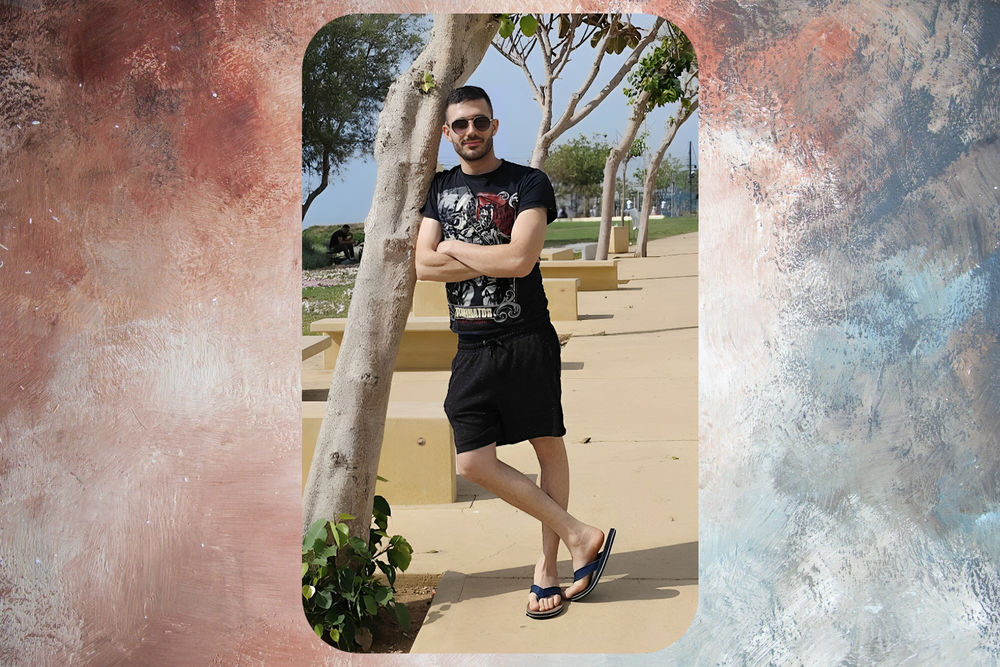
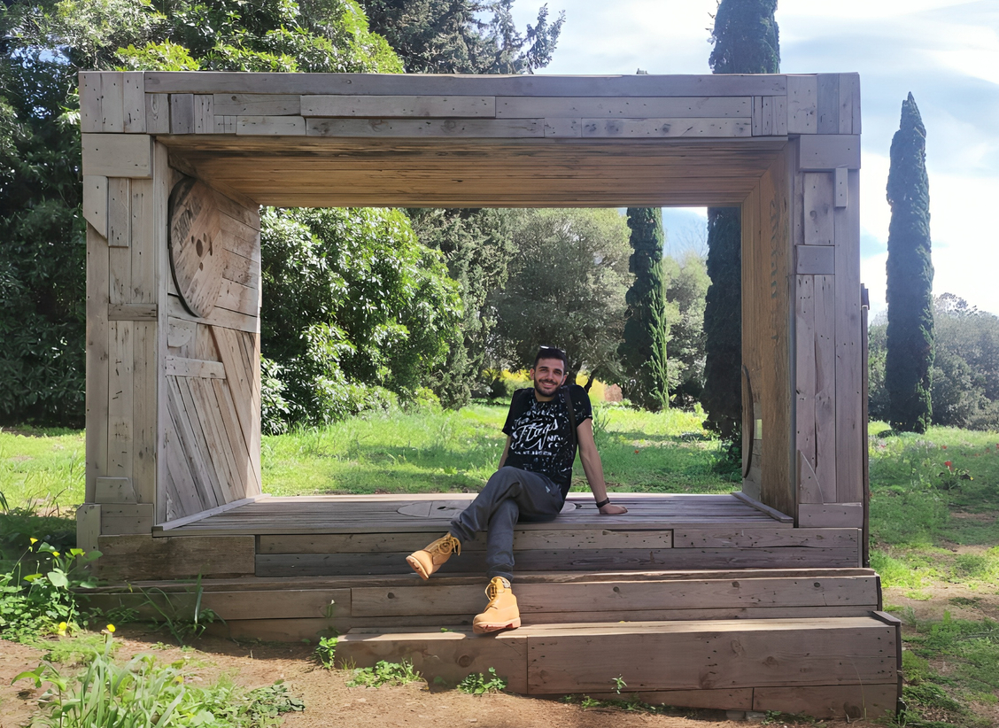

נהר השפרה
שמנו לב לנופים שטופי מים, והייתי חייב לעצור ולצלם את הרגע. בתמונה נראה נהר השפרה, שאורכו כ-400 ק״מ. הוא זורם במזרח גרמניה, ועובר בעיקר בברלין ובברנדנבורג.
אודות
נתן שור, מחפש את התפקיד הבא ב-QA Automation Engineering.

אני נתן שור, בן 27, מקרית ביאליק. יש לי ניסיון מעשי של שנתיים כ-QA Engineer בתהליכי הזמנה מקצה לקצה, טיסות וטיסה + מלון, והצעד הבא שלי הוא QA Automation Engineering.
מכאן יזמתי את ASTRA, פרויקט אוטומציה לבדיקת הזמנת טיסות. התחלתי אותו ב-Python, בניתי אותו מחדש ב-C# וב-.NET כדי להתאים לסביבת הפיתוח של החברה, והשתמשתי בכלי AI באופן נרחב לאורך הדרך.
הסיפור שלי
אמא שלי בדיוק קנתה טלפון נוקיה. ביקשתי להסתכל עליו, ומהרגע שהתחלתי להשתמש בו הרגשתי סקרנות עצומה ללמוד ולחקור. מאז, כל שאלה במשפחה על טכנולוגיה ומחשבים מגיעה אליי.
רציתי ללמוד מדעי המחשב, כי זו הייתה הבחירה האינטואיטיבית, אבל כשהתחלתי הבנתי שזה לא בשבילי. חיפשתי מה אפשר ללמוד כדי לתת מענה לרצון העז להתפתח בעולם המחשבים, ובמקביל לעזור ולהועיל לאנשים.
אחרי חיפוש ארוך באינטרנט הגעתי לתחום הבטחת איכות התוכנה, מקצוע מאתגר שנשען על תשומת לב לפרטים הקטנים.
לימודי QA אצל גל מטלון במכללה לאוטומציה.
התחלתי ב-Python, עברתי ל-C# ו-.NET, ובניתי את הפרויקט בעזרת כלי AI לצד הידע שלי בבדיקות.
הדרך הזו היא הסיבה שהפוקוס שלי היום הוא לבנות ולשפר אוטומציה לבדיקות.
QA (הבטחת איכות) נועד לוודא שהמוצרים שאנחנו מפתחים עובדים כמו שצריך. בודקי התוכנה מחפשים באגים במערכת ודואגים לתיקונם. הם גם בודקים שהכול פועל בצורה חלקה ונעימה למשתמש, כך שכל אחד יכול ליהנות מהמוצר בלי להיתקל בתקלות.
מחוץ לעבודה
טיול שנהניתי ממנו ורציתי לשתף.

תמיד דמיינתי את ברלין כעיר יפה, וגם התמונות רמזו על כך. הציפיות היו גבוהות, אבל כשנחתנו הבנתי כמה היא שונה וכמה היא יפה.

שמנו לב לנופים שטופי מים, והייתי חייב לעצור ולצלם את הרגע. בתמונה נראה נהר השפרה, שאורכו כ-400 ק״מ. הוא זורם במזרח גרמניה, ועובר בעיקר בברלין ובברנדנבורג.
במהלך הטיולים ראינו גבעות ירוקות בשטח פתוח, ומלא תיירים. מה שתפס את עינינו היה הפרלמנט של ברלין. ברלין, ואירופה בכלל, ידועות במבנים ייחודיים, והתמונה הזאת ממחישה את גודלו ואת עוצמתו.

בימים האחרונים בדקנו אילו אטרקציות יש בברלין, ומצאנו גן חיות עם חיות מיוחדות שלא רואים כל יום, במיוחד בישראל. כצפוי, החיות היו מגוונות ומרשימות, וגולת הכותרת הייתה הפנדות. הן אמנם ישנו, אבל עדיין היו חמודות מאוד.
אחד מגני החיות הגדולים והמרשימים בעולם, עם מגוון רחב של חיות, כולל פנדות נדירות. מקום נהדר להירגע ולהתקרב לטבע.
חנויות רבות, ממותגים מפורסמים ועד בוטיקים ייחודיים. אפשר למצוא בגדים, אביזרים ופריטים שלא תמצאו בשום מקום אחר.
ברלין ידועה בחיי הלילה המרגשים שלה: ברים, מועדונים והופעות חיות, שמאפשרים להרגיש את האווירה הייחודית של העיר ולהכיר אנשים חדשים.
פארקים יפים כמו הטירגארטן, שבהם אפשר לנוח, לקרוא ספר או לעשות פיקניק עם חברים. מקום נפלא להירגע בו אחרי יום מלא חוויות.
ברלין מלאה באתרים היסטוריים. אפשר לבקר בחומת ברלין ובאנדרטאות שונות שמספרות את הסיפור המיוחד של העיר.
מגוון רחב של מוזיאונים וגלריות עם תערוכות מרתקות, וכמובן גם סצנת אמנות הרחוב המפורסמת של העיר.


מחפש את האתגר הבא שלי בתחום האוטומציה. אשמח לשמוע על הזדמנויות מתאימות.